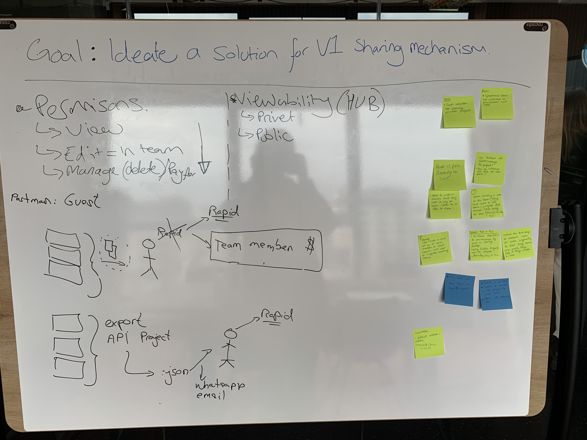

Rapid’s API Hub provides a seamless, connected experience to design, test, monitor and publish APIs.
Visit Rapid’s API Hub
Designing, testing and monetising APIs can be very difficult. Developers have to use multiple platforms and applications to make sure they get a quality API in their users hands. This takes a long time and as a result, slows down the speed for which people can build amazing software.
With Rapid’s API Hub, developers use the same simplified workflow for every step of their API journey, enabling organisations to accelerate API delivery while providing developers with a streamlined and more efficient coding experience.
As the owner of the Developer Tools Experience at Rapid, I spearheaded a transformative journey in enhancing the efficiency and effectiveness of our developer tools ecosystem. My role involved overseeing the entire lifecycle of developer tools, from conception to implementation. Through strategic planning and collaboration with cross-functional teams, I facilitated the creation of intuitive and powerful tools that empowered our developers to streamline their workflows and boost productivity.
I take pride in my ability to quickly grasp new technical concepts. However, delving into API development presented a formidable learning curve that demanded swift navigation for timely delivery. My greatest asset in overcoming this challenge was the collaboration with my colleagues engineers. Their firsthand knowledge transfer significantly facilitated my adaptation to the complexities of API development.
During this learning journey, I immersed myself in the technical intricacies of our product and observed a misalignment between my perception of our layman user and the existing journeys within both our product and the mental models of our engineers. Faced with limited resources for independent research, I utilised my colleagues as proxies. Guerrilla interview sessions with these proxy users led to a hypothesis: given the engineers' high levels of subject matter expertise and technical knowledge, the range of variables they would instinctively seek to control in any scenario is significantly broader than that of the layman user.
This realisation emphasised the necessity for a shift in perspective, leading to a transformation in my design process when conceptualising user journeys. This shift took form in a much tighter relationship and cadence of collaboration with my college engineers. I often conducted ideation workshops directly with them, maintaining open lines of communication to facilitate a two-way flow of ideas. The outcome was a process that assimilated highly technical concepts and produced a final solution infused with deep levels of consideration at its foundation, contributed by the very individuals responsible for implementing the feature to production environments.

Example output from a short session collecting technical considerations with engineers.
API development involves navigating a vast technical landscape, requiring precise data placement for seamless functionality. The learning curve can be steep, particularly for those without a formal computer science background. Despite enhancements from Rapid's tools to house most features of the API workflow, the existing design architecture opted to compartmentalise features rather than aligning with specific user goals, addressing only half the problem.
By conducting remote testing sessions with diverse user segments identified in previous studies, I crafted empathy maps consolidating these insights into accessible and actionable artefacts. The findings revealed that transitioning from one task to another when considering a single user journey was notably challenging and unintuitive, hindering users in achieving their goals. This enabled the formulation of a central hypothesis: users who navigated a goal-oriented architecture would achieve their tasks more swiftly and easily, affording us heightened salience to drive users further down our conversion funnel and ultimately increasing annual reoccurring revenue.